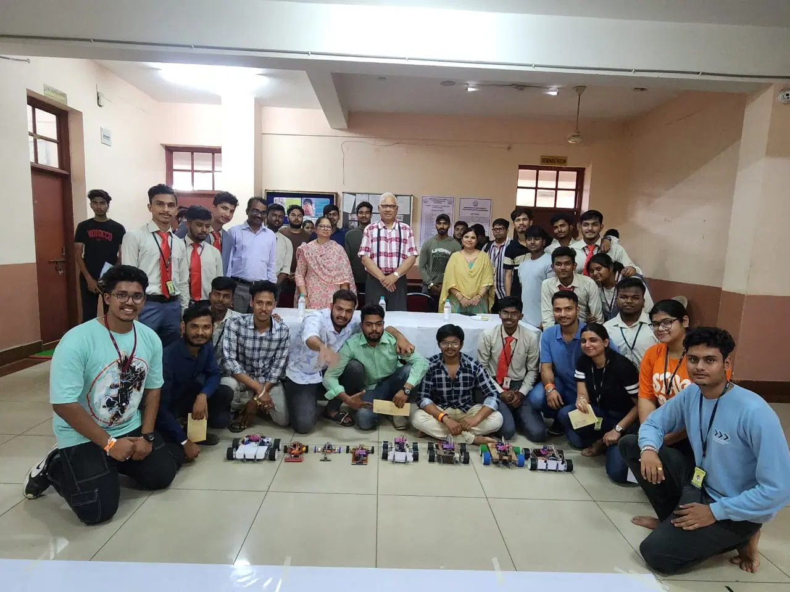
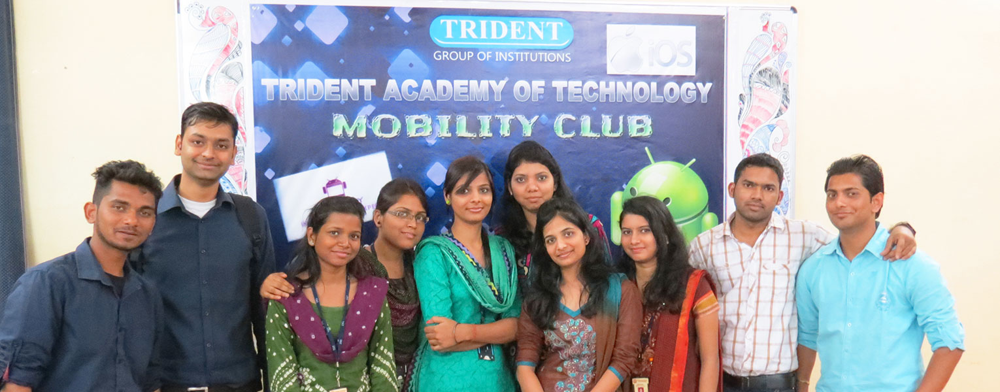

A brand in technical education shaping future leaders.
Trident Academy of Technology (TAT) is synonymous with academic excellence and industry-focused learning. Established with the vision of creating competent professionals, Trident offers a dynamic learning environment supported by experienced faculty, modern infrastructure and strong industry connections.
To become a sustainable institution of excellence in education, research and skill development that contributes meaningfully to society.
Building a legacy of success.
Trident Academy of Technology has consistently achieved academic excellence, produced successful alumni and earned recognition for quality education, innovation and student achievements.
View Achievements

Creating impact beyond classrooms.
Trident actively participates in social responsibility initiatives, community development programs and industry collaborations, ensuring students grow as responsible citizens and professionals.
Local Impact Global Engagement